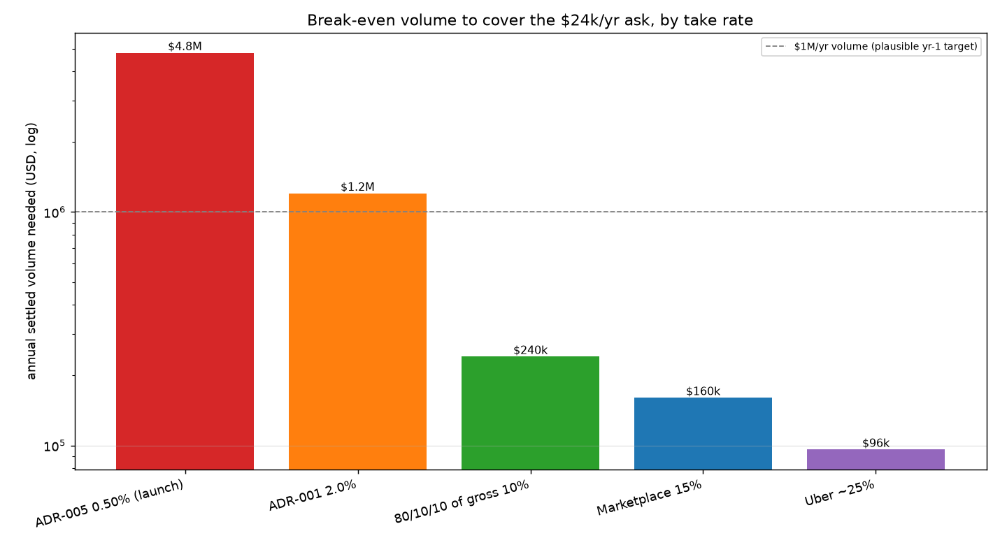
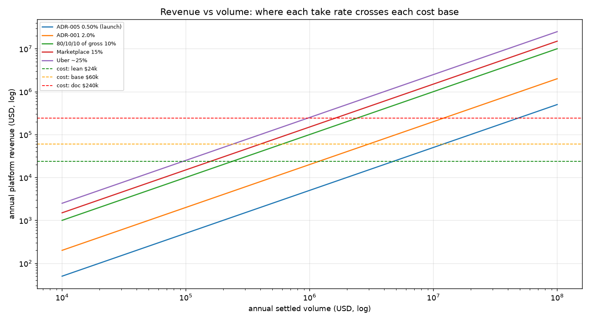
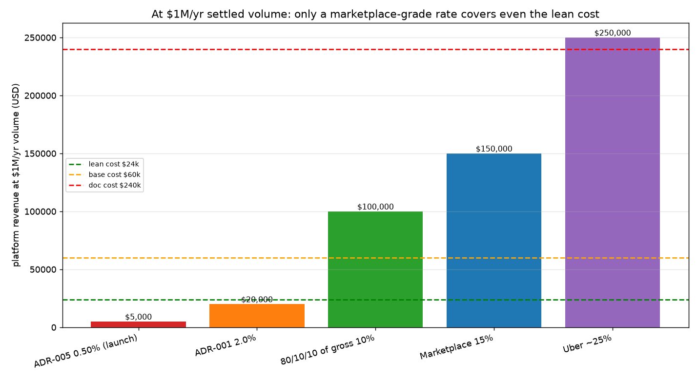
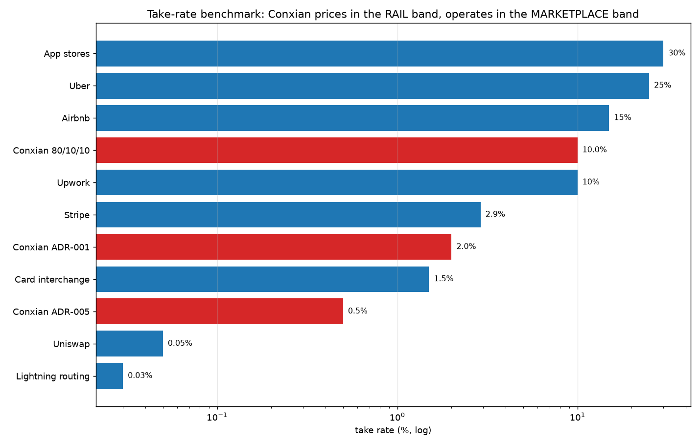
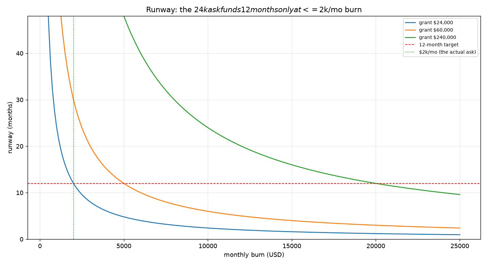
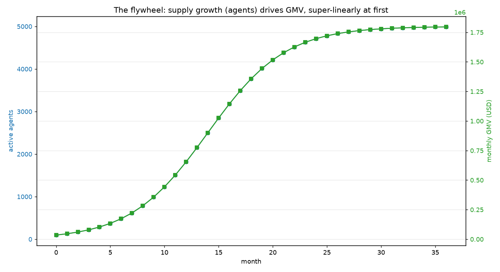
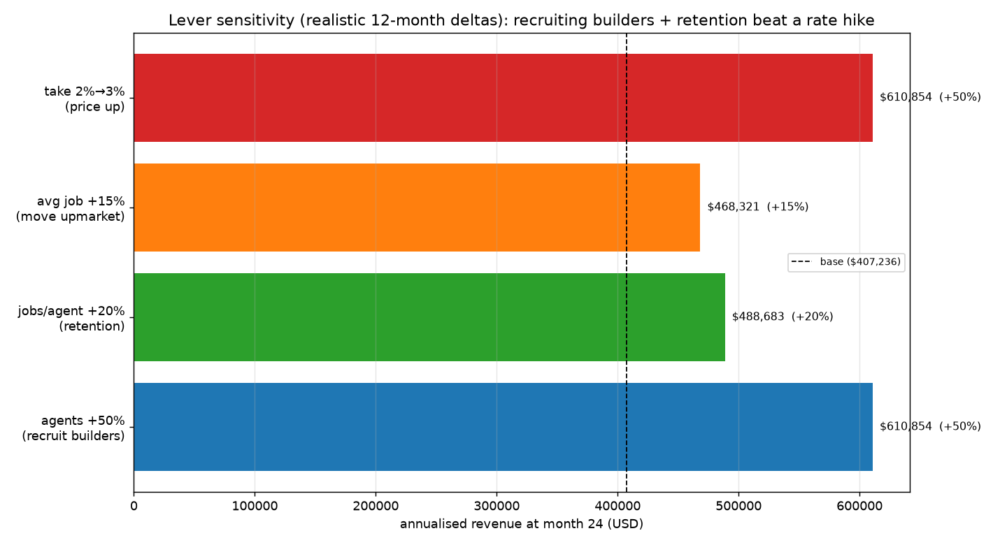
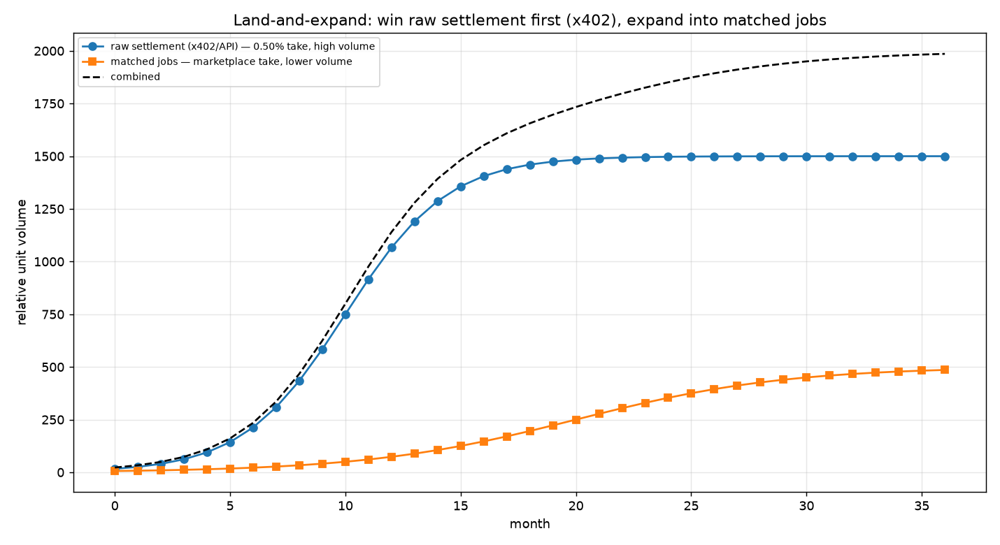
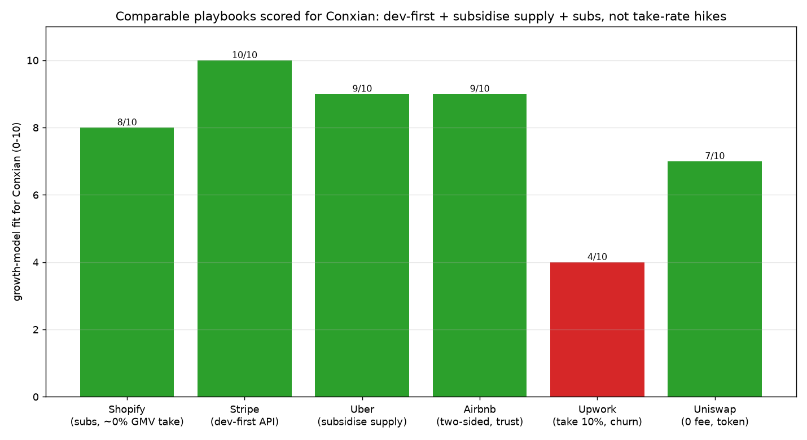

Survival: break-even volume by take rate
Annual settled volume needed to cover the $24k/yr ask. At 0.50% it is $4.8M/yr; at a marketplace rate it is $240k/yr.

Revenue vs volume, by rate
Where each take rate crosses each cost base ($24k lean, $60k base, $240k doc).

At $1M/yr volume
Only a marketplace-grade rate covers even the lean cost. 0.50% earns $5,000.

Take-rate benchmark
Conxian prices in the RAIL band (0.05-2.9%) but operates a MARKETPLACE (escrow, attestation, SLA, dispute).

Runway
The $24k ask funds 12 months only at <=$2k/mo burn.

Growth: the flywheel
Supply growth (active agents) drives GMV. Builders are the scarce side.

Growth: lever sensitivity
Recruiting builders (+50%) and retention (+20%) beat a rate hike (+50% revenue but churn risk).

Growth: path to break-even
At 0.50% break-even arrives far later than at a marketplace rate.

Growth: land-and-expand
Land with cheap raw settlement (x402, 0.50%); expand into matched jobs at a marketplace take.

Growth: comparable playbooks
Shopify (subs, ~0% GMV take), Stripe (dev-first), Uber (subsidise supply), Airbnb (trust) fit; Upwork (rate hike -> churn) is the warning.
